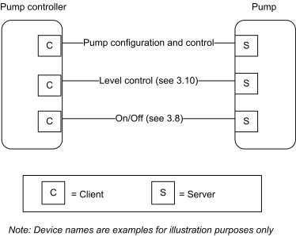
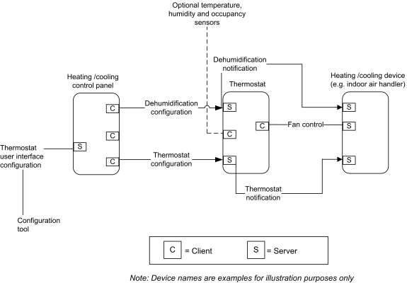
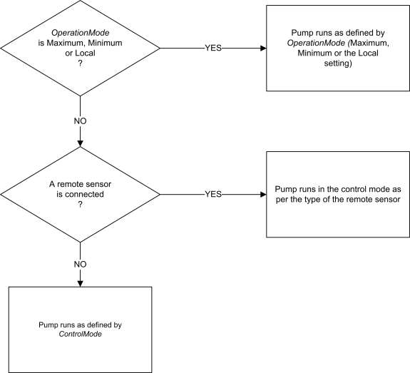

CHAPTER 6 HVAC ¶
The Cluster Library is made of individual chapters such as this one. See Document Control in the Cluster Library for a list of all chapters and documents. References between chapters are made using a X.Y notation where X is the chapter and Y is the sub-section within that chapter. References to external documents are contained in Chapter 1 and are made using [Rn] notation.
6.1 General Description ¶
6.1.1 Introduction ¶
The clusters specified in this document are for use typically in HVAC applications, but MAY be used in any application domain.
6.1.2 Terms ¶
4-pipes: In a 4-pipe HVAC fan coil system, heated and chilled water each have their own supply and return pipes, while in a 2 pipe system they share the same supply and return. With a 4-pipes system, heating and cooling can take place at the same time in different locations of a building. With a 2-pipes system, only heating or cooling can take place in the whole building.
Precooling: Cooling a building in the early (cooler) part of the day, so that the thermal mass of the building decreases cooling needs in the later (hotter) part of the day.
6.1.3 Cluster List ¶
This section lists the clusters specified in this document and gives examples of typical usage for the purpose of clarification. The clusters defined in this document are listed in Table 6-1:
Table 6-1. Clusters Specified in the HVAC Functional Domain ¶
| ID | Cluster Name | Description |
|---|---|---|
| 0x0200 | Pump Configuration and Con- trol | An interface for configuring and controlling pumps. |
| 0x0201 | Thermostat | An interface for configuring and controlling the function- ality of a thermostat |
| 0x0202 | Fan Control | An interface for controlling a fan in a heating / cooling system |
| 0x0203 | Dehumidification Control | An interface for controlling dehumidification |
| 0x0204 | Thermostat User Interface Con- figuration | An interface for configuring the user interface of a ther- mostat (which MAY be remote from the thermostat) |
Figure 6-1. Typical Usage of Pump Configuration and Control Cluster ¶

Figure 6-2. Example Usage of the Thermostat and Related Clusters

6.2 Pump Configuration and Control ¶
6.2.1 Overview ¶
Please see Chapter 2 for a general cluster overview defining cluster architecture, revision, classification, identification, etc.
The Pump Configuration and Control cluster provides an interface for the setup and control of pump devices, and the automatic reporting of pump status information. Note that control of pump speed is not included – speed is controlled by the On/Off and Level Control clusters.
6.2.1.1 Revision History ¶
The global ClusterRevision attribute value SHALL be the highest revision number in the table below.
| Rev | Description |
|---|---|
| 1 | mandatory global ClusterRevision attribute added |
6.2.1.2 Classification ¶
| Hierarchy | Role | PICS Code | Primary Transaction |
|---|---|---|---|
| Base | Application | PCC | Type 2 (server to client) |
6.2.1.3 Cluster Identifiers ¶
| Identifier | Name |
|---|---|
| 0x0200 | Pump Configuration and Control |
6.2.2 Server ¶
6.2.2.1 Dependencies ¶
Where external pressure, flow, and temperature measurements are processed by this cluster (see Table 6-8), these are provided by a Pressure Measurement cluster (4.5), a Flow Measurement cluster (4.6), and a Temperature Measurement client cluster (4.4), respectively. These 3 client clusters are used for connection to a remote sensor device. The pump is able to use the sensor measurement provided by a remote sensor for regulation of the pump speed.
For the alarms, described in Table 6-9, to be operational, the Alarms server cluster (3.11) SHALL be implemented on the same endpoint.
Note that control of the pump setpoint is not included in this cluster – the On/Off and Level Control clusters (see Figure 6-1) MAY be used by a pump device to turn it on and off and control its setpoint. Note that the Pump Configuration and Control Cluster MAY override on/off/setpoint settings for specific operation modes (See section 6.2.2.2.3.1 for detailed description of the operation and control of the pump.).
6.2.2.2 Attributes ¶
For convenience, the attributes defined in this specification are arranged into sets of related attributes; each set can contain up to 16 attributes. Attribute identifiers are encoded such that the most significant three nibbles specify the attribute set and the least significant nibble specifies the attribute within the set. The currently defined attribute sets are listed in Table 6-2.
Table 6-2. Pump Configuration Attribute Sets ¶
| Attribute Set Identifier | Description |
|---|---|
| 0x000 | Pump Information |
| 0x001 | Pump Dynamic Information |
| 0x002 | Pump Settings |
6.2.2.2.1 Pump Information Attribute Set ¶
The pump information attribute set contains the attributes summarized in Table 6-3:
Table 6-3. Attributes of the Pump Information Attribute Set ¶
| Id | Name | Type | Range | Access | Def | M/O |
|---|---|---|---|---|---|---|
| 0x0000 | MaxPressure | int16 | 0x8001-0x7fff | R | - | M |
| 0x0001 | MaxSpeed | uint16 | 0x0000 – 0xfffe | R | - | M |
| 0x0002 | MaxFlow | uint16 | 0x0000 – 0xfffe | R | - | M |
| 0x0003 | MinConstPressure | int16 | 0x8001-0x7fff | R | - | O |
| 0x0004 | MaxConstPressure | int16 | 0x8001-0x7fff | R | - | O |
| 0x0005 | MinCompPressure | int16 | 0x8001-0x7fff | R | - | O |
| 0x0006 | MaxCompPressure | int16 | 0x8001-0x7fff | R | - | O |
| 0x0007 | MinConstSpeed | uint16 | 0x0000 – 0xfffe | R | - | O |
| 0x0008 | MaxConstSpeed | uint16 | 0x0000 – 0xfffe | R | - | O |
| 0x0009 | MinConstFlow | uint16 | 0x0000 – 0xfffe | R | - | O |
| 0x000a | MaxConstFlow | uint16 | 0x0000 – 0xfffe | R | - | O |
| 0x000b | MinConstTemp | int16 | 0x954d – 0x7fff | R | - | O |
| 0x000c | MaxConstTemp | int16 | 0x954d – 0x7fff | R | - | O |
6.2.2.2.1.1 MaxPressure Attribute ¶
The MaxPressure attribute specifies the maximum pressure the pump can achieve. It is a physical limit, and does not apply to any specific control mode or operation mode.
This attribute is read only, and can only be set by the manufacturer. If the value is not available, this attribute will display the invalid value.
Valid range is -3,276.7 kPa to 3,276.7 kPa (steps of 0.1 kPa). The value -3,276.8 kPa (0x8000) indicates that this value is invalid.
6.2.2.2.1.2 MaxSpeed Attribute ¶
The MaxSpeed attribute specifies the maximum speed the pump can achieve. It is a physical limit, and does not apply to any specific control mode or operation mode.
This attribute is read only, and can only be set by the manufacturer. If the value is not available, this attribute will display the invalid value.
Valid range is 0 to 65,534 RPM (steps of 1 RPM). The value 65,535 RPM (0xffff) indicates that this value is invalid.
6.2.2.2.1.3 MaxFlow Attribute ¶
The MaxFlow attribute specifies the maximum flow the pump can achieve. It is a physical limit, and does not apply to any specific control mode or operation mode.
This attribute is read only, and can only be set by the manufacturer. If the value is not available, this attribute will display the invalid value.
Valid range is 0 m3/h to 6,553.4 m3/h (steps of 0.1 m3/h). The value 6,553.5 m3/h (0xffff) indicates that this value is invalid.
6.2.2.2.1.4 MinConstPressure Attribute ¶
The MinConstPressure attribute specifies the minimum pressure the pump can achieve when it is running and working in control mode constant pressure (ControlMode attribute of the Pump settings attribute set is set to Constant pressure).
This attribute is read only, and can only be set by the manufacturer. If the value is not available, this attribute will display the invalid value.
Valid range is –3,276.7 kPa to 3,276.7 kPa (steps of 0.1 kPa). The value -3,276.8 kPa (0x8000) indicates that this value is invalid.
6.2.2.2.1.5 MaxConstPressure Attribute ¶
The MaxConstPressure attribute specifies the maximum pressure the pump can achieve when it is working in control mode constant pressure (ControlMode attribute of the Pump settings attribute set is set to Constant pressure).
This attribute is read only, and can only be set by the manufacturer. If the value is not available, this attribute will display the invalid value.
Valid range is –3,276.7 kPa to 3,276.7 kPa (steps of 0.1 kPa). The value -3,276.8 kPa (0x8000) indicates that this value is invalid.
6.2.2.2.1.6 MinCompPressure Attribute ¶
The MinCompPressure attribute specifies the minimum compensated pressure the pump can achieve when it is running and working in control mode Proportional pressure (ControlMode attribute of the Pump settings attribute set is set to Proportional pressure).
This attribute is read only, and can only be set by the manufacturer. If the value is not available, this attribute will display the invalid value.
Valid range is –3,276.7 kPa to 3,276.7 kPa (steps of 0.1 kPa). The value -3,276.8 kPa (0x8000) indicates that this value is invalid.
6.2.2.2.1.7 MaxCompPressure Attribute ¶
The MaxCompPressure attribute specifies the maximum compensated pressure the pump can achieve when it is working in control mode Proportional pressure (ControlMode attribute of the Pump settings attribute set is set to Proportional pressure).
This attribute is read only, and can only be set by the manufacturer. If the value is not available, this attribute will display the invalid value.
Valid range is –3,276.7 kPa to 3,276.7 kPa (steps of 0.1 kPa). The value -3,276.8 kPa (0x8000) indicates that this value is invalid.
6.2.2.2.1.8 MinConstSpeed Attribute ¶
The MinConstSpeed attribute specifies the minimum speed the pump can achieve when it is running and working in control mode Constant speed (ControlMode attribute of the Pump settings attribute set is set to Constant speed).
This attribute is read only, and can only be set by the manufacturer. If the value is not available, this attribute will display the invalid value.
Valid range is 0 to 65,534 RPM (steps of 1 RPM). The value 65,535 RPM (0xffff) indicates that this value is invalid.
6.2.2.2.1.9 MaxConstSpeed Attribute ¶
The MaxConstSpeed attribute specifies the maximum speed the pump can achieve when it is working in control mode Constant speed (ControlMode attribute of the Pump settings attribute set is set to Constant speed).
This attribute is read only, and can only be set by the manufacturer. If the value is not available, this attribute will display the invalid value.
Valid range is 0 to 65,534 RPM (steps of 1 RPM). The value 65,535 RPM (0xffff) indicates that this value is invalid.
6.2.2.2.1.10 MinConstFlow Attribute ¶
The MinConstFlow attribute specifies the minimum flow the pump can achieve when it is running and working in control mode Constant flow (ControlMode attribute of the Pump settings attribute set is set to Constant flow).
This attribute is read only, and can only be set by the manufacturer. If the value is not available, this attribute will display the invalid value.
Valid range is 0 m3/h to 6,553.4 m3/h (steps of 0.1 m3/h). The value 6,553.5 m3/h (0xffff) indicates that this value is invalid.
6.2.2.2.1.11 MaxConstFlow Attribute ¶
The MaxConstFlow attribute specifies the maximum flow the pump can achieve when it is running and working in control mode Constant flow (ControlMode attribute of the Pump settings attribute set is set to Constant flow).
This attribute is read only, and can only be set by the manufacturer. If the value is not available, this attribute will display the invalid value.
Valid range is 0 m3/h to 6,553.4 m3/h (steps of 0.1 m3/h). The value 6,553.5 m3/h (0xffff) indicates that this value is invalid.
6.2.2.2.1.12 MinConstTemp Attribute ¶
The MinConstTemp attribute specifies the minimum temperature the pump can maintain in the system when it is running and working in control mode Constant temperature (ControlMode attribute of the Pump settings attribute set is set to Constant temperature).
This attribute is read only, and can only be set by the manufacturer. If the value is not available, this attribute will display the invalid value.
Valid range is –273.15 C to 327.67 C (steps of 0.01 C). The value -327.68C (0x8000) indicates that this value is invalid.
6.2.2.2.1.13 MaxConstTemp Attribute ¶
The MaxConstTemp attribute specifies the maximum temperature the pump can maintain in the system when it is running and working in control mode Constant temperature (ControlMode attribute of the Pump settings attribute set is set to Constant temperature).
This attribute is read only, and can only be set by the manufacturer. If the value is not available, this attribute will display the invalid value. MaxConstTemp SHALL be greater than or equal to MinConstTemp
Valid range is –273.15 C to 327.67 C (steps of 0.01 C). The value -327.68C (0x8000) indicates that this value is invalid.
6.2.2.2.2 Pump Dynamic Information Attribute Set ¶
The pump dynamic information attribute set contains the attributes summarized in Table 6-4:
Table 6-4. Attributes of the Pump Dynamic Information Attribute Set ¶
| Id | Name | Type | Range | Access | Def | M/O |
|---|---|---|---|---|---|---|
| 0x0010 | PumpStatus | map16 | - | RP | - | O |
| 0x0011 | EffectiveOperationMode | enum8 | 0x00 – 0xfe | R | - | M |
| 0x0012 | EffectiveControlMode | enum8 | 0x00 – 0xfe | R | - | M |
| 0x0013 | Capacity | int16 | 0x0000-0x7fff | RP | - | M |
| 0x0014 | Speed | uint16 | 0x0000 - 0xfffe | R | - | O |
| 0x0015 | LifetimeRunningHours | uint24 | 0x000000 - 0xfffffe | RW | 0 | O |
| 0x0016 | Power | uint24 | 0x000000 - 0xfffffe | RW | - | O |
| 0x0017 | LifetimeEnergyConsumed | uint32 | 0x00000000 - 0xfffffffe | R | 0 | O |
6.2.2.2.2.1 PumpStatus Attribute ¶
The PumpStatus attribute specifies the activity status of the pump functions listed in Table 6-5. Where a pump controller function is active, the corresponding bit SHALL be set to 1. Where a pump controller function is not active, the corresponding bit SHALL be set to 0.
Table 6-5. Values of the PumpStatus Attribute ¶
| Bit | Function | Remarks |
|---|---|---|
| 0 | Device fault | A fault related to the pump device is detected (Corresponds to a Alarm code in the range 6-13, see Table 6-9) |
| 1 | Supply fault | A fault related to the supply to the pump is detected (Corresponds to a Alarm code in the range 0-5 or 13, see Table 6-9) |
| 2 | Speed low | Setpoint is too low to achieve |
| 3 | Speed high | Setpoint is too high to achieve |
| 4 | Local override | The pump is overridden by local control |
| Bit | Function | Remarks |
|---|---|---|
| 5 | Running | Pump is currently running |
| 6 | Remote Pressure | A remote pressure sensor is used as the sensor for the regulation of the pump. EffectiveControlMode is Constant pressure, and the setpoint for the pump is interpreted as a percentage of the range of the remote sensor ([MinMeas- uredValue – MaxMeasuredValue]) |
| 7 | Remote Flow | A remote flow sensor is used as the sensor for the regulation of the pump. Ef- fectiveControlModeI is Constant flow, and the setpoint for the pump is inter- preted as a percentage of the range of the remote sensor ([MinMeasuredValue – MaxMeasuredValue]) |
| 8 | Remote Tempera- ture | A remote temperature sensor is used as the sensor for the regulation of the pump. EffectiveControlModeI is Constant temperature, and setpoint is inter- preted as a percentage of the range of the remote sensor ([MinMeasuredValue – MaxMeasuredValue]) |
6.2.2.2.2.2 EffectiveOperationMode Attribute ¶
The EffectiveOperationMode attribute specifies current effective operation mode of the pump. The value of the EffectiveOperationMode attribute is the same as the OperationMode attribute of the Pump settings attribute set, except when it is overridden locally. See section 6.2.2.2.3.1 for a detailed description of the operation and control of the pump.
This attribute is read only.
Valid range is defined by the operation modes listed in Table 6-1.
6.2.2.2.2.3 EffectiveControlMode Attribute ¶
The EffectiveControlMode attribute specifies the current effective control mode of the pump.
The EffectiveControlMode attribute contains the control mode that currently applies to the pump. It will have the value of the ControlMode attribute, unless a remote sensor is used as the sensor for regulation of the pump. In this case, EffectiveControlMode will display Constant pressure, Constant flow or Constant temperature if the remote sensor is a pressure sensor, a flow sensor or a temperature sensor respectively, regardless of the value of the ControlMode attribute.
See section 6.2.2.2.3.1 for detailed description of the operation and control of the pump. This attribute is read only.
Valid range is defined by the control modes listed in Table 6-8.
6.2.2.2.2.4 Capacity Attribute ¶
The Capacity attribute specifies the actual capacity of the pump as a percentage of the effective maximum setpoint value. It is updated dynamically as the speed of the pump changes.
This attribute is read only. If the value is not available (the measurement or estimation of the speed is done in the pump), this attribute will contain the invalid value.
Valid range is 0 % to 163.835% (0.005 % granularity). Although the Capacity attribute is a signed value, values of capacity less than zero have no physical meaning. The value -163.840 % (0x8000) indicates that this value is invalid.
6.2.2.2.2.5 Speed Attribute ¶
The Speed attribute specifies the actual speed of the pump measured in RPM. It is updated dynamically as the speed of the pump changes.
This attribute is read only. If the value is not available (the measurement or estimation of the speed is done in the pump), this attribute will contain the invalid value.
Valid range is 0 to 65.534 RPM. The value 65.535 RPM (0xffff) indicates that this value is invalid.
6.2.2.2.2.6 LifetimeRunningHours Attribute ¶
The LifetimeRunningHours attribute specifies the accumulated number of hours that the pump has been powered and the motor has been running. It is updated dynamically as it increases. It is preserved over power cycles of the pump. if LifeTimeRunningHours rises above maximum value it “rolls over” and starts at 0 (zero).
This attribute is writeable, in order to allow setting to an appropriate value after maintenance. If the value is not available, this attribute will contain the invalid value.
Valid range is 0 to 16,777,214 hrs. The value 16,777,215 (0xffffff) indicates that this value is unknown.
6.2.2.2.2.7 Power Attribute ¶
The Power attribute specifies the actual power consumption of the pump in Watts. The value of the Power attribute is updated dynamically as the power consumption of the pump changes.
This attribute is read only. If the value is not available (the measurement of power consumption is not done in the pump), this attribute will display the invalid value.
Valid range is 0 to 16,777,214 Watts. The value 16,777,215 (0xffffff) indicates that this value is unknown.
6.2.2.2.2.8 LifetimeEnergyConsumed Attribute ¶
The LifetimeEnergyConsumed attribute specifies the accumulated energy consumption of the pump through the entire lifetime of the pump in kWh. The value of the LifetimeEnergyConsumed attribute is updated dynamically as the energy consumption of the pump increases. If LifetimeEnergyConsumed rises above maximum value it “rolls over” and starts at 0 (zero).
This attribute is writeable, in order to allow setting to an appropriate value after maintenance.
Valid range is 0 kWh to 4,294,967,294 kWh. The value 4,294,967,295 (0xffffffff) indicates that this value is unknown.
6.2.2.2.3 Pump Settings Attribute Set ¶
The pump settings attribute set contains the attributes summarized in Table 6-6:
Table 6-6. Attributes of the Pump Settings Attribute Set ¶
| Identi- fier | Name | Type | Range | Access | Def | M/O |
|---|---|---|---|---|---|---|
| 0x0020 | OperationMode | enum8 | 0x00 – 0xfe | RW | 0x00 | M |
| 0x0021 | ControlMode | enum8 | 0x00 – 0xfe | RW | 0x00 | O |
| 0x0022 | AlarmMask | map16 | - | R | - | O |
6.2.2.2.3.1 OperationMode Attribute ¶
The OperationMode attribute specifies the operation mode of the pump. This attribute SHALL have one of the values listed in Table 6-7Values of the .
The actual operating mode of the pump is a result of the setting of the attributes OperationMode, Con-trolMode and the optional connection of a remote sensor. The operation and control is prioritized as shown in the scheme in Figure 6-3:
Figure 6-3. Priority Scheme of Pump Operation and Control ¶

If the OperationMode attribute is Maximum, Minimum or Local, the OperationMode attribute decides how the pump is operated.
If the OperationMode attribute is Normal and a remote sensor is connected to the pump, the type of the remote sensor decides the control mode of the pump. A connected remote pressure sensor will make the pump run in control mode Constant pressure and vice versa for flow and temperature type sensors. This is regardless of the setting of the ControlMode attribute.
If the OperationMode attribute is Normal and no remote sensor is connected, the control mode of the pump is decided by the ControlMode attribute.
OperationMode MAY be changed at any time, even when the pump is running. The behavior of the pump at the point of changing the value of the OperationMode attribute is vendor-specific.
Table 6-7. Values of the OperationMode Attribute ¶
| Value | Name | Explanation |
|---|---|---|
| 0 | Normal | The pump is controlled by a setpoint, as defined by a connected remote sensor or by the ControlMode attribute. (N.B. The setpoint is an internal variable which MAY be controlled between 0% and 100%, e.g., by means of the Level Control cluster 3.10) |
| 1 | Minimum | This value sets the pump to run at the minimum possible speed it can without be- ing stopped |
| 2 | Maximum | This value sets the pump to run at its maximum possible speed |
| 3 | Local | This value sets the pump to run with the local settings of the pump, regardless of what these are |
6.2.2.2.3.2 ControlMode Attribute ¶
The ControlMode attribute specifies the control mode of the pump. This attribute SHALL have one of the values listed in Table 6-8Values of the .
See section 6.2.2.2.3.1 for detailed description of the operation and control of the pump.
ControlMode MAY be changed at any time, even when the pump is running. The behavior of the pump at the point of changing is vendor-specific.
Table 6-8. Values of the ControlMode Attribute ¶
| Value | Name | Explanation |
|---|---|---|
| 0 | Constant speed | The pump is running at a constant speed. The setpoint is interpreted as a percent- age of the MaxSpeed attribute |
| 1 | Constant pressure | The pump will regulate its speed to maintain a constant differential pressure over its flanges. The setpoint is interpreted as a percentage of the range of the sensor used for this control mode. In case of the internal pressure sensor, this will be the range derived from the [MinConstPressure - MaxConstPressure] attributes. In case of a remote pressure sensor, this will be the range derived from the [MinMeasuredValue – MaxMeasuredValue] attributes of the remote pressure sen- sor. |
| 2 | Proportional pressure | The pump will regulate its speed to maintain a constant differential pressure over its flanges. The setpoint is interpreted as a percentage of the range derived of the [MinCompPressure - MaxCompPressure] attributes. The internal setpoint will be lowered (compensated) dependant on the flow in the pump (lower flow => lower internal setpoint) |
| 3 | Constant flow | The pump will regulate its speed to maintain a constant flow through the pump. The setpoint is interpreted as a percentage of the range of the sensor used for this control mode. In case of the internal flow sensor, this will be the range derived from the [MinConstFlow - MaxConstFlow] attributes. In case of a remote flow sensor, this will be the range derived from the [MinMeasuredValue – Max- MeasuredValue] attributes of the remote flow sensor. |
| Value | Name | Explanation |
|---|---|---|
| 5 | Constant temperature | The pump will regulate its speed to maintain a constant temperature. The setpoint is interpreted as a percentage of the range of the sensor used for this control mode. In case of the internal temperature sensor, this will be the range derived from the [MinConstTemp - MaxConstTemp] attributes. In case of a remote temperature sen- sor, this will be the range derived from the [MinMeasuredValue – Max- MeasuredValue] attributes of the remote temperature sensor. |
| 7 | Automatic | The operation of the pump is automatically optimized to provide the most suitable performance with respect to comfort and energy savings. This behavior is manu- facturer defined. The pump can be stopped by setting the setpoint of the level control cluster to 0 of by using the On/Off cluster. If the pump is started (at any setpoint), the speed of the pump is entirely determined by the pump. |
6.2.2.2.3.3 AlarmMask Attribute ¶
The AlarmMask attribute specifies whether each of the alarms listed in Table 6-9 is enabled. When the bit number corresponding to the alarm code is set to 1, the alarm is enabled, else it is disabled. Bits not corresponding to a code in the table (bits 14, 15) are reserved.
When the Alarms cluster is implemented on a device, and one of the alarm conditions included in this table occurs, an alarm notification is generated, with the alarm code field set as listed in the table.
Table 6-9. Alarm Codes ¶
| Alarm Code | Alarm Condition |
|---|---|
| 0 | Supply voltage too low |
| 1 | Supply voltage too high |
| 2 | Power missing phase |
| 3 | System pressure too low |
| 4 | System pressure too high |
| 5 | Dry running |
| 6 | Motor temperature too high |
| 7 | Pump motor has fatal failure |
| 8 | Electronic temperature too high |
| 9 | Pump blocked |
| 10 | Sensor failure |
| 11 | Electronic non fatal failure |
| 12 | Electronic fatal failure |
| 13 | General fault |
6.2.2.3 Commands ¶
The server does not receive or generate cluster specific commands.
6.2.2.4 Attribute Reporting ¶
This cluster SHALL support attribute reporting using the Report Attributes command, according to the minimum and maximum reporting interval, reportable change, and timeout period settings described in the ZCL Foundation Specification (see 2.4.7).
The following attributes SHALL be reported:
PumpStatus Capacity
6.2.3 Client ¶
The client supports no specific attributes. The client does not receive or generate cluster specific commands.
6.3 Thermostat ¶
6.3.1 Overview ¶
Please see Chapter 2 for a general cluster overview defining cluster architecture, revision, classification, identification, etc.
This cluster provides an interface to the functionality of a thermostat.
6.3.1.1 Revision History ¶
The global ClusterRevision attribute value SHALL be the highest revision number in the table below.
| Rev | Description |
|---|---|
| 1 | mandatory global ClusterRevision attribute added; fixed some defaults; CCB 1823, 1480 |
| 2 | CCB 1981 2186 2249 2250 2251; NFR Thermostat Setback |
| 3 | CCB 2477 2560 2773 2777 2815 2816 3029 |
6.3.1.2 Classification ¶
| Hierarchy | Role | PICS Code | Primary Transaction |
|---|---|---|---|
| Base | Application | TSTAT | Type 2 (server to client) |
6.3.1.3 Cluster Identifiers ¶
| Identifier | Name |
|---|---|
| 0x0201 | Thermostat |
6.3.1.4 Thermostat Temperature Conversion ¶
Many Thermostats store internally or have the capability to display the temperature in degree Fahrenheit format. The Thermostat cluster standardizes temperature representation in degree Celsius format when transferred over the air. Sample code has been provided (see 6.6.2.3). Manufacturers SHOULD use the conversion algorithm provided to convert temperature from Fahrenheit to Celsius and vice versa.
6.3.1.5 Thermostat Schedule Feature Mandatory Requirement ¶
The StartOfWeek Attribute is the indicator to show that the Weekly schedule extension is supported. If the Weekly schedule extension feature is supported, it is mandatory to also support the StartOfWeek Attribute, NumberOfWeeklyTransitions Attribute, NumberOfDailyTransitions Attribute, Set Weekly Schedule Command and Get Weekly Schedule Command.
6.3.2 Server ¶
6.3.2.1 Dependencies ¶
For alarms to be generated by this cluster, the Alarms server cluster (see 3.11) SHALL be included on the same endpoint. For remote temperature sensing, the Temperature Measurement client cluster (see 4.4) MAY be included on the same endpoint. For occupancy sensing, the Occupancy Sensing client cluster (see 4.8) MAY be included on the same endpoint.
6.3.2.2 Attributes ¶
For convenience, the attributes defined in this specification are arranged into sets of related attributes; each set can contain up to 16 attributes. Attribute identifiers are encoded such that the most significant three nibbles specify the attribute set and the least significant nibble specifies the attribute within the set. The currently defined attribute sets for Thermostat are listed in Table 6-10.
Table 6-10. Currently Defined Thermostat Attribute Sets ¶
| Attribute Set Identifier | Description |
|---|---|
| 0x000 | Thermostat Information |
| 0x001 | Thermostat Settings |
| 0x002 | Thermostat Schedule & HVAC Relay Attribute Set |
| 0x003 | Thermostat Setpoint Change Tracking Attribute Set |
| 0x004 | AC Information Attribute Set |
| 0x400 – 0xfff | Reserved for vendor specific attributes |
6.3.2.2.1 Thermostat Information Attribute Set ¶
The Thermostat Information attribute set contains the attributes summarized in Table 6-11.
Table 6-11. Attributes of the Thermostat Information Attribute Set ¶
| Id | Name | Type | Range | Acc | Default | M |
|---|---|---|---|---|---|---|
| 0x0000 | LocalTemperature | int16 | 0x954d – 0x7fff | RP | FF | M |
| 0x0001 | OutdoorTemperature | int16 | 0x954d – 0x7fff | R | FF | O |
| 0x0002 | Occupancy | map8 | desc | R | 1119 | O |
119 CCB 2560 default to occupied because occupied setpoints are mandatory
| Id | Name | Type | Range | Acc | Default | M |
|---|---|---|---|---|---|---|
| 0x0003 | AbsMinHeatSetpointLimit | int16 | 0x954d – 0x7fff | R | 0x02bc (7°C) | O |
| 0x0004 | AbsMaxHeatSetpointLimit | int16 | 0x954d – 0x7fff | R | 0x0bb8 (30°C) | O |
| 0x0005 | AbsMinCoolSetpointLimit | int16 | 0x954d – 0x7fff | R | 0x0640 (16°C) | O |
| 0x0006 | AbsMaxCoolSetpointLimit | int16 | 0x954d – 0x7fff | R | 0x0c80 (32°C) | O |
| 0x0007 | PICoolingDemand | uint8 | 0x00 – 0x64 | RP | - | O |
| 0x0008 | PIHeatingDemand | uint8 | 0x00 – 0x64 | RP | - | O |
| 0x0009 | HVACSystemTypeConfiguration | map8 | desc | R*120 W | 0 | O |
6.3.2.2.1.1 LocalTemperature Attribute ¶
LocalTemperature represents the temperature in degrees Celsius, as measured locally or remotely (over the network), including any adjustments applied by LocalTemperatureCalibration attribute (if any) as follows:
LocalTemperature = 100 x (temperature in degrees Celsius + LocalTemperatureCalibration).
Where -273.15°C <= temperature <= 327.67 ºC, corresponding to a LocalTemperature in the range 0x954d to 0x7fff.
The maximum resolution this format allows is 0.01 ºC.
A LocalTemperature non-value indicates that the temperature measurement is invalid.
All setpoint attributes in the Thermostat cluster SHALL be triggered based off the LocalTemperature attribute (i.e., measured temperature and any calibration offset).
6.3.2.2.1.2 OutdoorTemperature Attribute ¶
OutdoorTemperature represents the outdoor temperature in degrees Celsius, as measured locally or remotely (over the network). It is measured as described for LocalTemperature.
6.3.2.2.1.3 Occupancy Attribute ¶
Occupancy specifies whether the heated/cooled space is occupied or not, as measured locally or remotely (over the network). If bit 0 = 1, the space is occupied, else it is unoccupied. All other bits are reserved.
6.3.2.2.1.4 AbsMinHeatSetpointLimit Attribute ¶
The MinHeatSetpointLimit attribute specifies the absolute minimum level that the heating setpoint MAY be set to. This is a limitation imposed by the manufacturer. The value is calculated as described in the Local- Temperature attribute.
6.3.2.2.1.5 AbsMaxHeatSetpointLimit Attribute ¶
The MaxHeatSetpointLimit attribute specifies the absolute maximum level that the heating setpoint MAY be set to. This is a limitation imposed by the manufacturer. The value is calculated as described in the Local- Temperature attribute.
6.3.2.2.1.6 AbsMinCoolSetpointLimit Attribute ¶
120 CCB 2773 application may not allow remote change
The MinCoolSetpointLimit attribute specifies the absolute minimum level that the cooling setpoint MAY be set to. This is a limitation imposed by the manufacturer. The value is calculated as described in the Local- Temperature attribute.
6.3.2.2.1.7 AbsMaxCoolSetpointLimit Attribute ¶
The MaxCoolSetpointLimit attribute specifies the absolute maximum level that the cooling setpoint MAY be set to. This is a limitation imposed by the manufacturer. The value is calculated as described in the Local- Temperature attribute.
6.3.2.2.1.8 PICoolingDemand Attribute ¶
The PICoolingDemand attribute is 8 bits in length and specifies the level of cooling demanded by the PI (proportional integral) control loop in use by the thermostat (if any), in percent. This value is 0 when the thermostat is in “off” or “heating” mode.
This attribute is reported regularly and MAY be used to control a heating device.
6.3.2.2.1.9 PIHeatingDemand Attribute ¶
The PIHeatingDemand attribute is 8 bits in length and specifies the level of heating demanded by the PI loop in percent. This value is 0 when the thermostat is in “off” or “cooling” mode.
This attribute is reported regularly and MAY be used to control a cooling device.
6.3.2.2.1.10 HVACSystemTypeConfiguration Attribute ¶
The HVACSystemTypeConfiguration attribute specifies the HVAC system type controlled by the thermostat. If the thermostat uses physical DIP switches to set these parameters, this information SHALL be available read-only from the DIP switches. If these parameters are set via software, there SHALL be read/write access in order to provide remote programming capability. The meanings of individual bits are detailed in Table 6-12. Each bit represents a type of system configuration.
Table 6-12. HVAC System Type Configuration Values ¶
| Bit Number | Description |
|---|---|
| 0 – 1 | Cooling System Stage 00 – Cool Stage 1 01 – Cool Stage 2 10 – Cool Stage 3 11 – Reserved |
| 2 – 3 | Heating System Stage 00 – Heat Stage 1 01 – Heat Stage 2 10 – Heat Stage 3 11 – Reserved |
| 4 | Heating System Type 0 – Conventional 1 – Heat Pump |
| 5 | Heating Fuel Source 0 – Electric / B 1 – Gas / O |
6.3.2.2.2 Thermostat Settings Attribute Set ¶
The Thermostat settings attribute set contains the attributes summarized in Table 6-13:
Table 6-13. Attributes of the Thermostat Settings Attribute Set ¶
| Id | Name | Type | Range | Acc | Def | MO |
|---|---|---|---|---|---|---|
| 0x0010 | LocalTemperatureCalibration | int8 | 0xE7 – 0x19 | RW | 0x00 (0°C) | O |
| 0x0011 | OccupiedCoolingSetpoint | int16 | MinCoolSetpointLimit to MaxCool- SetpointLimit | RWS | 0x0a28 (26°C) | M* |
| 0x0012 | OccupiedHeatingSetpoint | int16 | MinHeatSetpointLimit to MaxHeatSetpointLimit | RWS | 0x07d0 (20°C) | M* |
| 0x0013 | UnoccupiedCoolingSetpoint | int16 | MinCoolSetpointLimit to MaxCool- SetpointLimit | RW | 0x0a28 (26°C) | O |
| 0x0014 | UnoccupiedHeatingSetpoint | int16 | MinHeatSetpointLimit to MaxHeatSetpointLimit | RW | 0x07d0 (20°C) | O |
| 0x0015 | MinHeatSetpointLimit | int16 | 0x954d – 0x7fff | RW | 0x02bc (7°C) | O |
| 0x0016 | MaxHeatSetpointLimit | int16 | 0x954d – 0x7fff | RW | 0x0bb8 (30°C) | O |
| 0x0017 | MinCoolSetpointLimit | int16 | 0x954d – 0x7fff | RW | 0x0640 (16°C) | O |
| 0x0018 | MaxCoolSetpointLimit | int16 | 0x954d – 0x7fff | RW | 0x0c80 (32°C) | O |
| 0x0019 | MinSetpointDeadBand | int8 | 0– 0x19 | R*W 121 | 0x19 (2.5°C) | O |
| 0x001a | RemoteSensing | map8 | 00000xxx | RW | 0 | O |
| 0x001b | ControlSequenceOfOperation | enum8 | desc | RW | 4 | M |
| 0x001c | SystemMode | enum8 | See Table 6-16 | RWS | 1 | M |
| 0x001d | AlarmMask | map8 | desc | R | 0 | O |
| 0x001e | ThermostatRunningMode | enum8 | desc | R | 0 | O |
*Note: "M*" designates that a server SHALL implement at least one of the attributes designated "M*." For example, a radiator valve implementing the Thermostat Cluster server would only implement the Occu-piedHeatingSetpoint attribute. Thermostats SHOULD implement both OccupiedCoolingSetpoint and Occu-piedHeatingSetpoint attributes. The "M*" designation allows HVAC devices to implement the portions of Thermostat cluster germane to their operation.
6.3.2.2.2.1 LocalTemperatureCalibration Attribute ¶
Specifies the offset the Thermostat server SHALL make to the measured temperature (locally or remotely) before calculating, displaying, or communicating the LocalTemperature attribute, in steps of 0.1°C.
The purpose of this attribute is to adjust the calibration of the Thermostat server per the user’s preferences (e.g., to match if there are multiple servers displaying different values for the same HVAC area) or compensate for variability amongst temperature sensors.
121 CCB 2777 RW to R*W and allow zero deadband for Thermostats that are just a UI
If a Thermostat client attempts to write LocalTemperatureCalibration attribute to an unsupported value (e.g., out of the range supported by the Thermostat server), the Thermostat server SHALL respond with a Write Attribute Response Command with a status of SUCCESS122 and set the value of LocalTemperatureCalibra-tion to the upper or lower limit reached.
6.3.2.2.2.2 OccupiedCoolingSetpoint Attribute ¶
The OccupiedCoolingSetpoint attribute specifies the cooling mode setpoint when the room is occupied
The OccupiedHeatingSetpoint attribute SHALL always be below the value specified in the OccupiedCooling Setpoint by at least MinSetpointDeadband. If an attempt is made to set it such that this condition is violated, a response command with the status code INVALID_VALUE (see 2.5.3) SHALL be returned. If the occupancy status of the room is unknown, this attribute SHALL be used as the cooling mode setpoint.
6.3.2.2.2.3 OccupiedHeatingSetpoint Attribute ¶
The OccupiedHeatingSetpoint attribute specifies the heating mode setpoint when the room is occupied. The OccupiedCoolingSetpoint attribute SHALL always be above the value specified in the OccupiedHeatingSet-point by at least MinSetpointDeadband.
If the occupancy status of the room is unknown, this attribute SHALL be used as the heating mode setpoint.
6.3.2.2.2.4 UnoccupiedCoolingSetpoint Attribute ¶
The UnoccupiedCoolingSetpoint attribute and specifies the cooling mode setpoint when the room is unoccupied. The UnoccupiedHeatingSetpoint attribute SHALL always be below the value specified in the Unoccu-piedCoolingSetpoint by at least MinSetpointDeadband.
If the occupancy status of the room is unknown, this attribute SHALL not be used.
6.3.2.2.2.5 UnoccupiedHeatingSetpoint Attribute ¶
The UnoccupiedHeatingSetpoint attribute specifies the heating mode setpoint when the room is unoccupiedThe UnoccupiedCoolingSetpoint attribute SHALL always be above the value specified in the Unoccu-piedHeatingSetpoint by at least MinSetpointDeadband.
If the occupancy status of the room is unknown, this attribute SHALL not be used.
6.3.2.2.2.6 MinHeatSetpointLimit Attribute ¶
The MinHeatSetpointLimit attribute specifies the minimum level that the heating setpoint MAY be set to. If this attribute is not present, it SHALL be taken as equal to AbsMinHeatSetpointLimit.
This attribute, and the following three attributes, allow the user to define setpoint limits more constrictive than the manufacturer imposed ones. Limiting users (e.g., in a commercial building) to such setpoint limits can help conserve power.
6.3.2.2.2.7 MaxHeatSetpointLimit Attribute ¶
The MaxHeatSetpointLimit attribute specifies the maximum level that the heating setpoint MAY be set to. It must be less than or equal to AbsMaxHeatSetpointLimit. If this attribute is not present, it SHALL be taken as equal to AbsMaxHeatSetpointLimit.
6.3.2.2.2.8 MinCoolSetpointLimit Attribute ¶
122 CCB 2477
The MinCoolSetpointLimit attribute specifies the minimum level that the cooling setpoint MAY be set to. It must be greater than or equal to AbsMinCoolSetpointLimit. If this attribute is not present, it SHALL be taken as equal to AbsMinCoolSetpointLimit.
6.3.2.2.2.9 MaxCoolSetpointLimit Attribute ¶
The MaxCoolSetpointLimit attribute specifies the maximum level that the cooling setpoint MAY be set to. . It must be less than or equal to AbsMaxCoolSetpointLimit. If this attribute is not present, it SHALL be taken as equal to AbsMaxCoolSetpointLimit.
6.3.2.2.2.10 MinSetpointDeadBand Attribute ¶
The MinSetpointDeadBand attribute specifies the minimum difference between the Heat Setpoint and the Cool SetPoint, in steps of 0.1°C. Its range is 0x0a to 0x19 (1°C to 2.5°C).
6.3.2.2.2.11 RemoteSensing Attribute ¶
The RemoteSensing attribute is an 8-bit bitmap that specifies whether the local temperature, outdoor temperature and occupancy are being sensed by internal sensors or remote networked sensors. The meanings of individual bits are detailed in Table 6-14.
Table 6-14. RemoteSensing Attribute Bit Values ¶
| Bit Number | Description |
|---|---|
| 0 | 0 – local temperature sensed internally 1 – local temperature sensed remotely |
| 1 | 0 – outdoor temperature sensed internally 1 – outdoor temperature sensed remotely |
| 2 | 0 – occupancy sensed internally 1 – occupancy sensed remotely |
6.3.2.2.2.12 ControlSequenceOfOperation Attribute ¶
The ControlSequenceOfOperation attribute specifies the overall operating environment of the thermostat, and thus the possible system modes that the thermostat can operate in. It SHALL be set to one of the nonreserved values in Table 6-15. (Note: it is not mandatory to support all values).
Table 6-15. ControlSequenceOfOperation Attribute Values ¶
| Value | Description | Possible Values of SystemMode |
|---|---|---|
| 0x00 | Cooling Only | Heat and Emergency are not possible |
| 0x01 | Cooling With Reheat | Heat and Emergency are not possible |
| 0x02 | Heating Only | Cool and precooling (see 6.1.2) are not possible |
| 0x03 | Heating With Reheat | Cool and precooling are not possible |
| 0x04 | Cooling and Heating 4-pipes (see 1.3.2) | All modes are possible |
| 0x05 | Cooling and Heating 4-pipes with Reheat | All modes are possible |
6.3.2.2.2.13 SystemMode Attribute ¶
The SystemMode attribute specifies the current operating mode of the thermostat, It SHALL be set to one of the non-reserved values in Table 6-16, as limited by Table 6-17. (Note: It is not mandatory to support all values).
Table 6-16. SystemMode Attribute Values ¶
| Attribute Value | Description |
|---|---|
| 0x00 | Off |
| 0x01 | Auto |
| 0x03 | Cool |
| 0x04 | Heat |
| 0x05 | Emergency heating |
| 0x06 | Precooling (see 6.1.2) |
| 0x07 | Fan only |
| 0x08 | Dry |
| 0x09 | Sleep |
The interpretation of the Heat, Cool and Auto values of SystemMode is shown in Table 6-17.
Table 6-17. Interpretation of SystemMode Values ¶
| Attribute Val- ues | Temperature Below Heat Setpoint | Temperature Between Heat Setpoint and Cool Setpoint | Temperature Above Cool Setpoint |
| Heat | Temperature below target | Temperature on target | Temperature on target |
| Cool | Temperature on target | Temperature on target | Temperature above target |
| Auto | Temperature below target | Temperature on target | Temperature above target |
6.3.2.2.2.14 AlarmMask Attribute ¶
The AlarmMask attribute specifies whether each of the alarms listed in Table 6-18Alarm Codes is enabled. When the bit number corresponding to the alarm code is set to 1, the alarm is enabled, else it is disabled. Bits not corresponding to a code in the table are reserved.
When the Alarms cluster is implemented on a device, and one of the alarm conditions included in this table occurs, an alarm notification is generated, with the alarm code field set as listed in the table.
Table 6-18. Alarm Codes ¶
| Alarm Code | Alarm Condition |
|---|---|
| 0 | Initialization failure. The device failed to complete initialization at power-up. |
| 1 | Hardware failure |
| 2 | Self-calibration failure |
6.3.2.2.2.15 Thermostat Running Mode Attribute ¶
ThermostatRunningMode represents the running mode of the thermostat. The thermostat running mode can only be Off, Cool or Heat. This attribute is intended to provide additional information when the thermostat’s system mode is in auto mode. The attribute value is maintained to have the same value as the Sys-temMode attribute.
Table 6.19 Thermostat Running Mode Attribute Values ¶
| Value | Description |
|---|---|
| 0x00 | Off |
| 0x03 | Cool |
| 0x04 | Heat |
6.3.2.2.3 Thermostat Schedule & HVAC Relay Attribute Set ¶
Table 6-20. Thermostat Schedule & HVAC Relay Attribute Set ¶
| Id | Name | Type | Range | Acc | Def | M |
|---|---|---|---|---|---|---|
| Schedule Attribute Set 0x0020 – 0x0028 | ||||||
| x0020 | StartOfWeek | enum8 | desc | R | – | O |
| x0021 | NumberOfWeeklyTransitions | uint8 | 0x00 – 0xff | R | 0 | O |
| x0022 | NumberOfDailyTransitions | uint8 | 0x00 – 0xff | R | 0 | O |
| x0023 | TemperatureSetpointHold | enum8 | desc | RW | 0 | O |
| x0024 | TemperatureSetpointHoldDuration | uint16 | 0 - 0x05a0 | RW | 0xffff | O |
| x0025 | ThermostatProgrammingOperationMode | map8 | desc | RWP | 0 | O |
| HVAC Relay Attribute Set 0x0029 – 0x002F | ||||||
| x0029 | ThermostatRunningState | map16 | desc | R | - | O |
6.3.2.2.3.1 StartOfWeek Attribute ¶
StartOfWeek represents the day of the week that this thermostat considers to be the start of week for weekly set point scheduling. The possible values are given in Table 6-21:
Table 6-21. StartofWeek Enumeration Values ¶
| Enumeration Field | Value Description |
|---|---|
| 0x00 | Sunday |
| 0x01 | Monday |
| 0x02 | Tuesday |
| 0x03 | Wednesday |
| 0x04 | Thursday |
| 0x05 | Friday |
| 0x06 | Saturday |
If the Weekly schedule extension is supported this attribute SHALL be supported.
This attribute MAY be able to be used as the base to determine if the device supports weekly scheduling by reading the attribute. Successful response means that the weekly scheduling is supported.
6.3.2.2.3.2 NumberOfWeeklyTransitions Attribute ¶
NumberOfWeeklyTransitions attribute determines how many weekly schedule transitions the thermostat is capable of handling.
6.3.2.2.3.3 NumberOfDailyTransitions Attribute ¶
NumberOfDailyTransitions attribute determines how many daily schedule transitions the thermostat is capable of handling.
6.3.2.2.3.4 TemperatureSetpointHold Attribute ¶
TemperatureSetpointHold specifies the temperature hold status on the thermostat, as shown in Table 6-22. If hold status is on, the thermostat SHOULD maintain the temperature set point for the current mode until a system mode change. If hold status is off, the thermostat SHOULD follow the setpoint transitions specified by its internal scheduling program. If the thermostat supports setpoint hold for a specific duration, it SHOULD also implement the TemperatureSetpointHoldDuration attribute.
Table 6-22. TemperatureSetpointHold Attribute Values ¶
| Enumeration Field | Value Description |
|---|---|
| 0x00 | Setpoint Hold Off |
| 0x01 | Setpoint Hold On |
6.3.2.2.3.5 TemperatureSetpointHoldDuration Attribute ¶
TemperatureSetpointHoldDuration sets the period in minutes for which a setpoint hold is active. Thermostats that support hold for a specified duration SHOULD implement this attribute. The valid range is from 0x0000 – 0x05A0 (1440 minutes within a day). A non-value indicates the field is unused. All other values are reserved.
6.3.2.2.3.6 ThermostatProgrammingOperationMode Attribute ¶
The ThermostatProgrammingOperationMode attribute determines the operational state of the thermostat’s programming. The thermostat SHALL modify its programming operation when this attribute is modified by a client and update this attribute when its programming operation is modified locally by a user. The thermostat MAY support more than one active ThermostatProgrammingOperationMode. For example, the thermostat MAY operate simultaneously in Schedule Programming Mode and Recovery Mode. If a thermostat supports Thermostat Programming Operation Mode attribute, it SHALL support attribute reporting for this attribute. Any locally-initiated changes to the ThermostatProgrammingOperationMode SHALL be updated and reported to all clients configured to receive such reports. The meanings of individual bits are detailed in
Table 6-23. Each bit represents a type of operation. ¶
Table 6-23. ThermostatProgrammingOperationMode Attribute Values ¶
| Bit Num123 | Description |
|---|---|
| 0 | 0 – Simple/setpoint mode. This mode means the thermostat setpoint is altered only by manual up/down changes at the thermostat or remotely, not by internal schedule programming. 1 – Schedule programming mode. This enables or disables any programmed weekly schedule configurations. Note: It does not clear or delete previous weekly schedule programming configurations. |
| 1 | 0 - Auto/recovery mode set to OFF 1 – Auto/recovery mode set to ON |
| 2 | 0 – Economy/EnergyStar mode set to OFF 1 – Economy/EnergyStar mode set to ON |
6.3.2.2.3.7 ThermostatRunningState Attribute ¶
ThermostatRunningState represents the current relay state of the heat, cool, and fan relays, whose values are shown in Table 6-24.
Table 6-24. HVAC Relay State Values ¶
| Bit Number | Description |
|---|---|
| 0 | Heat State On |
| 1 | Cool State On |
| 2 | Fan State On |
| 3 | Heat 2nd Stage State On |
| 4 | Cool 2nd Stage State On |
| 5 | Fan 2nd Stage State On |
| 6 | Fan 3rd Stage Stage On |
6.3.2.2.4 Thermostat Setpoint ChangeTracking Attribute Set ¶
Table 6-25. Thermostat Setpoint Change Tracking Attribute Set ¶
| Id | Name | Type | Range | Acc | Def | MO |
|---|---|---|---|---|---|---|
| 0x0030 | SetpointChangeSource | enum8 | 0x00 – 0xff | R | 0x00 | O |
| 0x0031 | SetpointChangeAmount | int16 | 0x0000 – 0xffff | R | 0x8000 | O |
| 0x0032 | SetpointChangeSourceTimestamp | UTC | 0x00000000 – 0xfffffffe | R | 0x00000000 | O |
| 0x0034 | OccupiedSetback | uint8 | OccupiedSetbackMin – Oc- cupiedSetbackMax | RW | 0xff | O |
123 CCB 2816
| Id | Name | Type | Range | Acc | Def | MO |
|---|---|---|---|---|---|---|
| 0x0035 | OccupiedSetbackMin | uint8 | 0x00 – OccupiedSet- backMax | R | 0xff | O |
| 0x0036 | OccupiedSetbackMax | uint8 | OccupiedSetbackMin – 0xff | R | 0xff | O |
| 0x0037 | UnoccupiedSetback | uint8 | UnoccupiedSetbackMin – OccupiedSetbackMax | RW | 0xff | O |
| 0x0038 | UnoccupiedSetbackMin | uint8 | 0x00 – OccupiedSet- backMax | R | 0xff | O |
| 0x0039 | UnoccupiedSetbackMax | uint8 | OccupiedSetbackMin – 0xff | R | 0xff | O |
| 0x003a | EmergencyHeatDelta | uint8 | 0x00 – 0xff | RW | 0xff | O |
6.3.2.2.4.1 SetpointChangeSource Attribute ¶
The SetpointChangeSource attribute specifies the source of the current active OccupiedCoolingSetpoint or OccupiedHeatingSetpoint (i.e., who or what determined the current setpoint).
SetpointChangeSource attribute enables service providers to determine whether changes to setpoints were initiated due to occupant comfort, scheduled programming or some other source (e.g., electric utility or other service provider). Because automation services MAY initiate frequent setpoint changes, this attribute clearly differentiates the source of setpoint changes made at the thermostat.
Table 6-26. SetpointChangeSource Values ¶
| SetpointChangeSource Attribute | Description |
|---|---|
| 0x00 | Manual, user-initiated setpoint change via the thermostat |
| 0x01 | Schedule/internal programming-initiated setpoint change |
| 0x02 | Externally-initiated setpoint change (e.g., DRLC cluster com- mand, attribute write) |
6.3.2.2.4.2 SetpointChangeAmount Attribute ¶
The SetpointChangeAmount attribute specifies the delta between the current active OccupiedCoolingSetpoint or OccupiedHeatingSetpoint and the previous active setpoint. This attribute is meant to accompany the Set-pointChangeSource attribute; devices implementing SetpointChangeAmount SHOULD also implement Set-pointChangeSource.
Table 6-27. SetpointChangeAmount Values ¶
| SetpointChangeAmount Attribute | Description |
|---|---|
| 0x0000 – 0xffff | The signed difference in 0.01 degrees Celsius between the previous tempera- ture setpoint and the new temperature setpoint. |
6.3.2.2.4.3 SetpointChangeSourceTimestamp Attribute ¶
The SetpointChangeSourceTimestamp attribute specifies the time in UTC at which the SetpointChang-eSourceAmount attribute change was recorded.
6.3.2.2.4.4 OccupiedSetback Attribute ¶
Specifies the degrees Celsius, in 0.1 degree increments, the Thermostat server will allow the LocalTempera-ture attribute to float above the OccupiedCooling setpoint (i.e., OccupiedCooling + OccupiedSetback) or below the OccupiedHeating setpoint (i.e., OccupiedHeating – OccupiedSetback) before initiating a state change to bring the temperature back to the user’s desired setpoint. This attribute is sometimes also referred to as the “span.”
The purpose of this attribute is to allow remote configuration of the span between the desired setpoint and the measured temperature to help prevent over-cycling and reduce energy bills, though this may result in lower comfort on the part of some users.
A value of 0xff indicates the attribute is unused.
If OccupiedSetback is implemented, then the Thermostat server SHALL also implement OccupiedSetback- Min and OccupiedSetbackMax attributes.
If the Thermostat client attempts to write OccupiedSetback to a value greater than OccupiedSetbackMax, the Thermostat server SHALL set its OccupiedSetback value to OccupiedSetbackMax and SHALL send a Write Attribute Response command with a Status Code field enumeration of SUCCESS124 response.
If the Thermostat client attempts to write OccupiedSetback to a value less than OccupiedSetbackMin, the Thermostat server SHALL set its OccupiedSetback value to OccupiedSetbackMin and SHALL send a Write Attribute Response command with a Status Code field enumeration of SUCCESS125 response.
6.3.2.2.4.5 OccupiedSetbackMin Attribute ¶
Specifies the minimum degrees Celsius, in 0.1 degree increments, the Thermostat server will allow the Oc-cupiedSetback attribute to be configured by a user.
A value of 0xff indicates the attribute is unused.
OccupiedSetbackMin attribute value SHALL be less than OccupiedSetbackMax attribute value. Attempts to configure OccupiedSetbackMin with a value greater than or equal to the value of the OccupiedSetbackMax attribute SHALL cause the Thermostat server to respond with a Write Attribute Response Command containing the status INVALID_VALUE and SHALL revert back to the previous OccupiedSetbackMin attribute value.
If OccupiedSetbackMin is configured to a value greater than the value of OccupiedSetback, then the Thermostat server SHALL update the value of OccupiedSetback to equal the new value of OccupiedSetbackMin.
6.3.2.2.4.6 OccupiedSetbackMax Attribute ¶
Specifies the maximum degrees Celsius, in 0.1 degree increments, the Thermostat server will allow the Oc-cupiedSetback attribute to be configured by a user.
A value of 0xff indicates the attribute is unused.
OccupiedSetbackMax attribute value SHALL be greater than OccupiedSetbackMin attribute value. Attempts to configure OccupiedSetbackMax with a value less than or equal to the value of the OccupiedSet-backMin attribute SHALL cause the Thermostat server to respond with a Write Attribute Response Command containing the status INVALID_VALUE and SHALL revert back to the previous OccupiedSetbackMax attribute value.
If OccupiedSetbackMax is configured to a value less than the value of OccupiedSetback, then the Thermostat server SHALL update the value of OccupiedSetback to equal the new value of OccupiedSetbackMax.
6.3.2.2.4.7 UnoccupiedSetback Attribute ¶
124 CCB 2477 125 CCB 2477
Specifies the degrees Celsius, in 0.1 degree increments, the Thermostat server will allow the LocalTemperature attribute to float above the UnoccupiedCooling setpoint (i.e., UnoccupiedCooling + UnoccupiedSetback) or below the UnoccupiedHeating setpoint (i.e., UnoccupiedHeating - UnoccupiedSetback) before initiating a state change to bring the temperature back to the user’s desired setpoint. This attribute is sometimes also referred to as the “span.”
The purpose of this attribute is to allow remote configuration of the span between the desired setpoint and the measured temperature to help prevent over-cycling and reduce energy bills, though this may result in lower comfort on the part of some users.
A value of 0xff indicates the attribute is unused.
If UnoccupiedSetback is implemented, then the Thermostat server SHALL also implement UnoccupiedSetbackMin and UnoccupiedSetbackMax attributes.
If the Thermostat client attempts to write UnoccupiedSetback to a value greater than UnoccupiedSetbackMax, the Thermostat server SHALL set its UnoccupiedSetback value to UnoccupiedSetbackMax and SHALL send a Write Attribute Response command with a Status Code field enumeration of SUCCESS126 response.
If the Thermostat client attempts to write UnoccupiedSetback to a value less than UnoccupiedSetbackMin, the Thermostat server SHALL set its UnoccupiedSetback value to UnoccupiedSetbackMin and SHALL send a Write Attribute Response command with a Status Code field enumeration of SUCCESS127 response.
6.3.2.2.4.8 UnoccupiedSetbackMin Attribute ¶
Specifies the minimum degrees Celsius, in 0.1 degree increments, the Thermostat server will allow the Un-occupiedSetback attribute to be configured by a user.
A value of 0xff indicates the attribute is unused.
UnoccupiedSetbackMin attribute value SHALL be less than UnoccupiedSetbackMax attribute value. Attempts to configure UnoccupiedSetbackMin with a value greater than or equal to the value of the Unoccu-piedSetbackMax attribute SHALL cause the Thermostat server to respond with a Write Attribute Response Command containing the status INVALID_VALUE and SHALL revert back to the previous Unoccupied- SetbackMin attribute value.
If UnoccupiedSetbackMin is configured to a value greater than the value of UnoccupiedSetback, then the Thermostat server SHALL update the value of UnoccupiedSetback to equal the new value of Unoccupied- SetbackMin.
6.3.2.2.4.9 UnoccupiedSetbackMax Attribute ¶
Specifies the maximum degrees Celsius, in 0.1 degree increments, the Thermostat server will allow the Un-occupiedSetback attribute to be configured by a user.
A value of 0xff indicates the attribute is unused.
UnoccupiedSetbackMax attribute value SHALL be greater than UnoccupiedSetbackMin attribute value. Attempts to configure UnoccupiedSetbackMax with a value less than or equal to the value of the Unoccupied- SetbackMin attribute SHALL cause the Thermostat server to respond with a Write Attribute Response Command containing the status INVALID_VALUE and SHALL revert back to the previous UnoccupiedSet-backMax attribute value.
If UnoccupiedSetbackMax is configured to a value less than the value of UnoccupiedSetback, then the Thermostat server SHALL update the value of UnoccupiedSetback to equal the new value of UnoccupiedSet-backMax.
6.3.2.2.4.10 EmergencyHeatDelta Attribute ¶
126 CCB 2477 127 CCB 2477
Specifies the delta, in 0.1 degrees Celsius, between LocalTemperature and the OccupiedHeatingSetpoint or UnoccupiedHeatingSetpoint attributes at which the Thermostat server will operate in emergency heat mode.
If the difference between LocalTemperature and Un/OccupiedHeatingSetpoint is greater than or equal to the EmergencyHeatDelta and the Thermostat server’s SystemMode attribute is in a heating-related mode, then the Thermostat server SHALL immediately switch to the SystemMode attribute value that provides the highest stage of heating (e.g., emergency heat) and continue operating in that running state until the Occu-piedHeatingSetpoint value is reached. For example:
- LocalTemperature = 10.0 degrees Celsius
- OccupiedHeatingSetpoint = 16.0 degrees Celsius
- EmergencyHeatDelta = 2.0 degrees Celsius
=> OccupiedHeatingSetpoint - LocalTemperature ≥? EmergencyHeatDelta
=> 16 - 10 ≥? 2
=> TRUE >>> Thermostat server changes its SystemMode to operate in 2nd stage or emergency heat mode
The purpose of this attribute is to provide Thermostat clients the ability to configure rapid heating when a setpoint is of a specified amount greater than the measured temperature. This allows the heated space to be quickly heated to the desired level set by the user.
6.3.2.2.5 AC Information Attribute Set ¶
Table 6-28. Attributes of the AC Information Attribute Set ¶
| Id | Name | Type | Range | Access | Default | M/O |
|---|---|---|---|---|---|---|
| 0x0040 | ACType | enum8 | desc | RW | 0 | O |
| 0x0041 | ACCapacity | uint16 | 0x0000 – 0xffff | RW | 0 | O |
| 0x0042 | ACRefrigerantType | enum8 | desc | RW | 0 | O |
| 0x0043 | ACCompressorType | enum8 | desc | RW | 0 | O |
| 0x0044 | ACErrorCode | map32 | 0x00000000 – 0xffffffff | RW | 0 | O |
| 0x0045 | ACLouverPosition | enum8 | desc | RW | 0 | O |
| 0x0046 | ACCoilTemperature | int16 | 0x954d – 0x7fff | R | FF | O |
| 0x0047 | ACCapacityFormat | enum8 | desc | RW | 0 | O |
6.3.2.2.5.1 ACType Attribute ¶
Indicates the type of Mini Split ACType of Mini Split AC is defined depending on how Cooling and Heating condition is achieved by Mini Split AC.
Table 6-29. ACType Enumeration ¶
| Enumeration Field Value | Description |
|---|---|
| 0x00 | Unknown128 |
| 0x01 | Cooling and Fixed Speed |
128 CCB 2815
| Enumeration Field Value | Description |
|---|---|
| 0x02 | Heat Pump and Fixed Speed |
| 0x03 | Cooling and Inverter |
| 0x04 | Heat Pump and Inverter |
6.3.2.2.5.2 ACCapacity Attribute ¶
Indicates capacity of Mini Split AC in terms of the format defined by the ACCapacityFormat attribute
6.3.2.2.5.3 ACRefrigerantType Attribute ¶
Indicates type of refrigerant used within the Mini Split AC.
Table 6-30. ACRefrigerantType Enumeration ¶
| Enumeration Field Value | Description |
|---|---|
| 0x00 | Unknown129 |
| 0x01 | R22 |
| 0x02 | R410a |
| 0x03 | R407c |
6.3.2.2.5.4 ACCompressorType Attribute ¶
This indicates type of Compressor used within the Mini Split AC.
Table 6-31. ACCompressorType Enumeration ¶
| Enumeration Field Value | Description |
|---|---|
| 0x00 | Unknown130 |
| 0x01 | T1, Max working ambient 43 ºC |
| 0x02 | T2, Max working ambient 35 ºC |
| 0x03 | T3, Max working ambient 52 ºC |
6.3.2.2.5.5 ACErrorCode Attribute ¶
This indicates the type of errors encountered within the Mini Split AC. Error values are reported with four bytes values. Each bit within the four bytes indicates the unique error.
Table 6-32. ACErrorCode Values ¶
| Bit | Value |
|---|---|
| 0 | Compressor Failure or Refrigerant Leakage |
129 CCB 2815 130 CCB 2815
| Bit | Value |
|---|---|
| 1 | Room Temperature Sensor Failure |
| 2 | Outdoor Temperature Sensor Failure |
| 3 | Indoor Coil Temperature Sensor Failure |
| 4 | Fan Failure |
6.3.2.2.5.6 ACLouverPosition Attribute ¶
This indicates the position of Louver on the AC. Attribute values are listed in Table 6-33.
Table 6-33. ACLouverPosition Values ¶
| Louver Position Byte | Value |
|---|---|
| Fully Closed | 0x01 |
| Fully Open | 0x02 |
| Quarter Open | 0x03 |
| Half Open | 0x04 |
| Three Quarters Open | 0x05 |
6.3.2.2.5.7 ACCoilTemperature Attribute ¶
ACCoilTemperature represents the temperature in degrees Celsius, as measured locally or remotely (over the network) as follows:
- ACCoilTemperature = 100 x temperature in degrees Celsius. •
Where -273.15°C <= temperature <= 327.67 ºC, corresponding to an ACCoilTemperature in the range 0x954d to 0x7fff. •
The maximum resolution this format allows is 0.01 ºC. •
ACCoilTemperature of FFll indicates that the temperature measurement is invalid.
6.3.2.2.5.8 ACCapacityFormat Attribute ¶
This is the format for the ACCapacity attribute.
Table 6-34. ACCapacity Enumeration ¶
| Enumeration Field Value | Description |
|---|---|
| 0x00 | BTUh |
6.3.2.3 Server Commands Received ¶
The command IDs for the Thermostat cluster are listed in Table 6-35:
Table 6-35. Command IDs for the Thermostat Cluster ¶
| Command Identifier Field Value | Description | M/O |
|---|---|---|
| 0x00 | Setpoint Raise/Lower | M |
| 0x01 | Set Weekly Schedule | O |
| 0x02 | Get Weekly Schedule | O |
| 0x03 | Clear Weekly Schedule | O |
| 0x04 | Get Relay Status Log | O |
6.3.2.3.1 Setpoint Raise/Lower Command ¶
6.3.2.3.1.1 Payload Format ¶
The Setpoint Raise/Lower command payload SHALL be formatted as illustrated in Figure 6-4Format of the Setpoint Raise/Lower Command Payload.
Figure 6-4. Format of the Setpoint Raise/Lower Command Payload ¶
| Bits | 8 | 8 |
|---|---|---|
| Data Type | enum8 | int8 |
| Field Name | Mode | Amount |
6.3.2.3.1.2 Mode Field ¶
The mode field SHALL be set to one of the non-reserved values in Table 6-36. It specifies which setpoint is to be configured. If it is set to auto, then both setpoints SHALL be adjusted.
Table 6-36. Mode Field Values for Setpoint Raise/Lower Command ¶
| Mode Field Value | Description |
|---|---|
| 0x00 | Heat (adjust Heat Setpoint) |
| 0x01 | Cool (adjust Cool Setpoint) |
| 0x02 | Both (adjust Heat Setpoint and Cool Set- point) |
6.3.2.3.1.3 Amount Field ¶
The amount field is a signed 8-bit integer that specifies the amount the setpoint(s) are to be increased (or decreased) by, in steps of 0.1°C.
6.3.2.3.1.4 Effect on Receipt ¶
The attributes for the indicated setpoint(s) SHALL be increased by the amount specified in the Amount field.
6.3.2.3.2 Set Weekly Schedule Command ¶
6.3.2.3.2.1 Payload Format ¶
The set weekly schedule command payload SHALL be formatted as shown in Figure 6-5 and Figure 6-6.
Figure 6-5. Set Weekly Schedule Command Payload Format (1 of 2) ¶
| Octets | 1(Header) | 1(Header) | 1(Header) | 2 | 2/0 | 2/0 |
|---|---|---|---|---|---|---|
| Data Type | uint8131 | map8 | map8 | uint16 | int16 | int16 |
| Field Name | Number of Transitions for Sequence | Day of Week for Sequence | Mode for Se- quence | Transition Time 1 | Heat Set Point 1 | Cool Set Point 1 |
Figure 6-6. Set Weekly Schedule Command Payload Format (2 of 2) ¶
| Octets | Variable | 2 | 2/0 | 2/0 |
|---|---|---|---|---|
| Data Type | -- | uint16 | int16 | int16 |
| Field Name | -- | Transition Time 10 | Heat Set Point 10 | Cool Set Point 10 |
The set weekly schedule command is used to update the thermostat weekly set point schedule from a management system. If the thermostat already has a weekly set point schedule programmed then it SHOULD replace each daily set point set as it receives the updates from the management system. For example if the thermostat has 4 set points for every day of the week and is sent a Set Weekly Schedule command with one set point for Saturday then the thermostat SHOULD remove all 4 set points for Saturday and replace those with the updated set point but leave all other days unchanged. If the schedule is larger than what fits in one frame or contains more than 10 transitions, the schedule SHALL then be sent using multiple Set Weekly Schedule Commands.
Each Set Weekly Schedule Command has 3 header bytes – Number of Transitions for Sequence, Day of Week for Sequence, and Mode for Sequence. The application SHALL decode the payload according to what has specified in the 3 header bytes.
6.3.2.3.2.2 Number of Transitions for Sequence ¶
The Number of Transitions for Sequence field indicates how many individual transitions to expect for this sequence of commands. If a device supports more than 10 transitions in its schedule they can send this by sending more than 1 “Set Weekly Schedule” command, each containing the separate information that the device needs to set.
6.3.2.3.2.3 Day of Week for Sequence ¶
This field represents the day of the week at which all the transitions within the payload of the command SHOULD be associated to. This field is a bitmap and therefore the associated set point could overlap onto multiple days (you could set one transition time for all “week days” or whatever combination of days the implementation requests). Table 6-37 displays the bitmap values.
Table 6-37. Day Of Week for Sequence Values ¶
| Bit Number | Description |
|---|---|
| 0 | Sunday |
| 1 | Monday |
| 2 | Tuesday |
131 CCB 3029
| Bit Number | Description |
|---|---|
| 3 | Wednesday |
| 4 | Thursday |
| 5 | Friday |
| 6 | Saturday |
| 7 | Away or Vacation |
Each set point transition will begin with the day of week for this transition. There can be up to 10 transitions for each command.
6.3.2.3.2.4 Mode for Sequence ¶
This field determines how the application SHALL decode the Set Point Fields of each transition for the remaining of the command. This field is a bitmap and the values are presented in Table 6-38.
Table 6-38. Mode for Sequence Values ¶
| Bit Number | Description |
|---|---|
| 0 | Heat Setpoint Field Present in Payload |
| 1 | Cool Setpoint Field Present in Payload |
If the Heat Bit is On and the Cool Bit is Off, the Command SHALL be represented as in Figure 6-7 and
Figure 6-8. ¶
Figure 6-7. Set Heat Weekly Schedule Command Payload Format (1 of 2) ¶
| Octets | 1(Header) | 1(Header) | 1(Header) | 2 | 2 |
|---|---|---|---|---|---|
| Data Type | enum8 | map8 | map8 | uint16 | int16 |
| Field Name | Number of Transi- tions for Sequence | Day of Week for Sequence | 0x01 (Heat) | Transition Time 1 | Heat Set Point 1 |
Figure 6-8. Set Heat Weekly Schedule Command Payload Format (2 of 2) ¶
| Octets | Variable | 2 | 2 |
|---|---|---|---|
| Data Type | -- | uint16 | int16 |
| Field Name | -- | Transition Time 10 | Heat Set Point 10 |
If the Heat Bit is Off and the Cool Bit is On, the Command SHALL be represented as in Figure 6-9 and
Figure 6-10. ¶
Figure 6-9. Set Cool Weekly Schedule Command Payload Format (1 of 2) ¶
| Octets | 1(Header) | 1(Header) | 1(Header) | 2 | 2 |
|---|---|---|---|---|---|
| Data Type | enum8 | map8 | map8 | uint16 | int16 |
| Field Name | Number of Transi- tions for Sequence | Day of Week for Sequence | 0x02 (Cool) | Transition Time 1 | Cool Set Point 1 |
Figure 6-10. Set Cool Weekly Schedule Command Payload Format (2 of 2) ¶
| Octets | Variable | 2 | 2 |
|---|---|---|---|
| Data Type | -- | uint16 | int16 |
| Field Name | -- | Transition Time 10 | Cool Set Point 10 |
If both the Heat Bit and the Cool Bit are On, the Command SHALL be represented as in Figure 6-11 and
Figure 6-12. ¶
Figure 6-11. Set Heat & Cool Weekly Schedule Command Payload Format (1 of 2) ¶
| Octets | 1(Header) | 1(Header) | 1(Header) | 2 | 2 | 2 |
|---|---|---|---|---|---|---|
| Data Type | enum8 | map8 | map8 | uint16 | int16 | int16 |
| Field Name | Number of Transitions for Sequence | Day of Week for Sequence | 0x03 (Heat & Cool) | Transition Time 1 | Heat Set Point 1 | Cool Set Point 1 |
Figure 6-12. Set Heat & Cool Weekly Schedule Command Payload Format (2 of 2) ¶
| Octets | Variable | 2 | 2 | 2 |
|---|---|---|---|---|
| Data Type | -- | uint16 | int16 | int16 |
| Field Name | -- | Transition Time 10 | Heat Set Point 10 | Cool Set Point 10 |
At least one of the bits in the Mode For Sequence byte SHALL be on.
6.3.2.3.2.5 Transition Time Field ¶
This field represents the start time of the schedule transition during the associated day. The time will be represented by a 16 bits unsigned integer to designate the minutes since midnight. For example, 6am will be represented by 0x0168 (360 minutes since midnight) and 11:30pm will be represented by 0x0582 (1410 minutes since midnight)
6.3.2.3.2.6 Heat Set Point Field ¶
If the heat bit is enabled in the Mode For Sequence byte, this field represents the heat setpoint to be applied at this associated transition start time. The format of this attribute represents the temperature in degrees Celsius with 0.01 deg C resolution.
6.3.2.3.2.7 Cool Set Point Field ¶
If the cool bit is enabled in the Mode For Sequence byte, this field represents the cool setpoint to be applied at this associated transition start time. The format of this attribute represents the temperature in degrees Celsius with 0.01 deg C resolution.
6.3.2.3.2.8 Effect on Receipt ¶
The weekly schedule for updating set points SHALL be stored in the thermostat and SHOULD begin at the time of receipt. A default response SHALL always be sent as a response. If the total number of transitions sent is greater than what the thermostat supports a default response of INSUFFICIENT_SPACE (0x89) SHALL be sent in response to the last command sent for that transition sequence. If any of the set points sent in the entire sequence is out of range of what the thermostat supports (AbsMin/MaxSetPointLimit) then a default response of INVALID_VALUE (0x87) SHALL be sent in return and the no set points from the entire sequence SHOULD be used. If the transitions could be added successfully a default response of SUC- CESS(0x00) SHALL be sent. Overlapping transitions is not allowed. If an overlap is detected and a default response of FAILURE(0x01) SHALL be sent. The Day of Week for Sequence and Mode for Sequence fields are defined as bitmask for the flexibility to support multiple days and multiple modes within one command. If thermostat cannot handle incoming command with multiple days and/or multiple modes within one command, it SHALL send default response of INVALID_FIELD (0x85) in return.
6.3.2.3.3 Get Weekly Schedule ¶
Figure 6-13. Format of the Get Weekly Schedule Command Payload ¶
| Octets | 1 | 1 |
|---|---|---|
| Data Type | map8 | map8 |
| Field Name | Days To Return | Mode To Return |
6.3.2.3.3.1 Days To Return ¶
This field indicates the number of days the client would like to return the set point values for and could be any combination of single days or the entire week. This field has the same format as the Day of Week for Sequence field in the Set Weekly Schedule command.
6.3.2.3.3.2 Mode To Return ¶
This field indicates the mode the client would like to return the set point values for and could be any combination of heat only, cool only or heat&cool. This field has the same format as the Mode for Sequence field in the Set Weekly Schedule command.
6.3.2.3.3.3 Effect on Receipt ¶
When this command is received the unit SHOULD send in return the Get Weekly Schedule Response command. The Days to Return and Mode to Return fields are defined as bitmask for the flexibility to support multiple days and multiple modes within one command. If thermostat cannot handle incoming command with multiple days and/or multiple modes within one command, it SHALL send default response of INVA- LID_FIELD (0x85) in return.
6.3.2.3.4 Clear Weekly Schedule ¶
The Clear Weekly Schedule command is used to clear the weekly schedule. The Clear weekly schedule has no payload.
6.3.2.3.4.1 Effect on Receipt ¶
When this command is received, all transitions currently stored SHALL be cleared and a default response of SUCCESS (0x00) SHALL be sent in response. There are no error responses to this command.
6.3.2.3.5 Get Relay Status Log ¶
The Get Relay Status Log command is used to query the thermostat internal relay status log. This command has no payload.
The log storing order is First in First Out (FIFO) when the log is generated and stored into the Queue.
The first record in the log (i.e., the oldest) one, is the first to be replaced when there is a new record and there is no more space in the log. Thus, the newest record will overwrite the oldest one if there is no space left.
The log storing order is Last In First Out (LIFO) when the log is being retrieved from the Queue by a client device.
Once the "Get Relay Status Log Response" frame is sent by the Server, the "Unread Entries" attribute SHOULD be decremented to indicate the number of unread records that remain in the queue.
If the "Unread Entries" attribute reaches zero and the Client sends a new "Get Relay Status Log Request", the Server MAY send one of the following items as a response:
i) resend the last Get Relay Status Log Response
or
ii) generate new log record at the time of request and send Get Relay Status Log Response with the
new data
For both cases, the "Unread Entries" attribute will remain zero.
6.3.2.3.5.1 Effect on Receipt ¶
When this command is received, the unit SHALL respond with Relay Status Log command if the relay status log feature is supported on the unit.
6.3.2.4 Server Commands Sent ¶
Table 6-39 shows the command sent by the server (received by the client). ¶
Table 6-39. Server Commands Send Command ID ¶
| Command Identifier Field Value | Description |
|---|---|
| 0x00 | Get Weekly Schedule Response |
| 0x01 | Get Relay Status Log Response |
6.3.2.4.1 Get Weekly Schedule Response ¶
This command has the same payload format as the Set Weekly Schedule. Please refer to the payload detail in Section Set Weekly Schedule Command, Set Weekly Schedule Command, in this chapter.
6.3.2.4.2 Get Relay Status Log Response ¶
This command is sent from the thermostat cluster server in response to the Get Relay Status Log. After the Relay Status Entry is sent over the air to the requesting client, the specific entry will be cleared from the thermostat internal log.
6.3.2.4.2.1 Payload Format ¶
The relay status log command payload SHALL be formatted as shown in Figure 6-14.
Figure 6-14. Format of the Relay Status Log Payload ¶
| Octets | 2 | 2 | 2 | 1 | 2 | 2 |
|---|---|---|---|---|---|---|
| Data Type | uint16 | map8 | int16 | uint8 | int16 | uint16 |
| Field Name | Time of Day | Relay Status | Local Temperature | Humidity in Percentage | Set Point | Unread Entries |
6.3.2.4.2.2 Time of Day Field ¶
Represents the sample time of the day, in minutes since midnight, when the relay status was captured for this associated log entry. For example, 6am will be represented by 0x0168 (360 minutes since midnight) and 11:30pm will be represented by 0x0582 (1410 minutes since midnight).
6.3.2.4.2.3 Relay Status Field ¶
Presents the relay status for thermostat when the log is captured. Each bit represents one relay used by the thermostat. If the bit is on, the associated relay is on and active. Each thermostat manufacturer can create its own mapping between the bitmask and the associated relay.
6.3.2.4.2.4 Local Temperature Field ¶
Presents the local temperature when the log is captured. The format of this attribute represents the temperature in degrees Celsius with 0.01 deg C resolution.
6.3.2.4.2.5 Humidity Field ¶
This field presents the humidity as a percentage when the log was captured.
6.3.2.4.2.6 Setpoint Field ¶
Presents the target setpoint temperature when the log is captured. The format of this attribute represents the temperature in degrees Celsius with 0.01 deg C resolution.
6.3.2.4.2.7 Unread Entries Field ¶
This field presents the number of unread entries within the thermostat internal log system.
6.3.2.5 Attribute Reporting ¶
This cluster SHALL support attribute reporting using the Report Attributes command and according to the minimum and maximum reporting interval and reportable change settings described in Chapter 2, Foundation and whenever they change. The following attributes SHALL be reported:
- LocalTemperature •
PICoolingDemand •
PIHeatingDemand
Other attributes MAY optionally be reported.
6.3.2.6 Scene Table Extensions ¶
If the Scenes server cluster (see 3.7) is implemented, the following extension fields SHALL be added to the Scenes table in the given order, i.e., the attribute listed as 1 is added first:
1) OccupiedCoolingSetpoint
2) OccupiedHeatingSetpoint
3) SystemMode
6.3.3 Client ¶
The client has no specific dependencies nor specific attributes. The client cluster generates the commands received by the server cluster, as required by the application.
6.4 Fan Control ¶
6.4.1 Overview ¶
Please see Chapter 2 for a general cluster overview defining cluster architecture, revision, classification, identification, etc.
This cluster specifies an interface to control the speed of a fan as part of a heating / cooling system.
6.4.1.1 Revision History ¶
The global ClusterRevision attribute value SHALL be the highest revision number in the table below.
| Rev | Description |
|---|---|
| 1 | global mandatory ClusterRevision attribute added |
6.4.1.2 Classification ¶
| Hierarchy | Role | PICS Code | Primary Transaction |
|---|---|---|---|
| Base | Application | FAN | Type 1 (client to server) |
6.4.1.3 Cluster Identifiers ¶
| Identifier | Name |
|---|---|
| 0x0202 | Fan Control |
6.4.2 Server ¶
6.4.2.1 Attributes ¶
The Fan Control Status attribute set contains the attributes summarized in Table 6-40Attributes of the Fan Control Cluster.
Table 6-40. Attributes of the Fan Control Cluster ¶
| Identi- fier | Name | Type | Range | Access | Default | M/O |
|---|---|---|---|---|---|---|
| 0x0000 | FanMode | enum8 | 0x00 – 0x06 | RW | 0x05 (auto) | M |
| 0x0001 | FanModeSequence | enum8 | 0x00 – 0x04 | RW | 0x02 | M |
6.4.2.1.1 FanMode Attribute ¶
The FanMode attribute is an 8-bit value that specifies the current speed of the fan. It SHALL be set to one of the nonreserved values in Table 6-41:
Table 6-41. FanMode Attribute Values ¶
| Value | Description |
|---|---|
| 0x00 | Off |
| 0x01 | Low |
| 0x02 | Medium |
| 0x03 | High |
| 0x04 | On |
| 0x05 | Auto (the fan speed is self-regulated) |
| 0x06 | Smart (when the heated/cooled space is occupied, the fan is always on) |
Note that for Smart mode, information must be available as to whether the heated/cooled space is occupied. This MAY be accomplished by use of the Occupancy Sensing cluster (see 4.8).
6.4.2.1.2 FanModeSequence Attribute ¶
The FanModeSequence attribute is an 8-bit value that specifies the possible fan speeds that the thermostat can set. It SHALL be set to one of the non-reserved values in Table 6-42FanSequenceOperatio. (Note: 'Smart' is not in this table, as this mode resolves to one of the other modes depending on occupancy).
Table 6-42. FanSequenceOperation Attribute Values ¶
| Attribute Value | Description |
|---|---|
| 0x00 | Low/Med/High |
| 0x01 | Low/High |
| Attribute Value | Description |
|---|---|
| 0x02 | Low/Med/High/Auto |
| 0x03 | Low/High/Auto |
| 0x04 | On/Auto |
6.4.2.2 Commands ¶
No cluster specific commands are generated or received by the server.
6.4.3 Client ¶
The Client cluster has no specific attributes. No cluster specific commands are received by the server. No cluster specific commands are generated by the server.
6.5 Dehumidification Control ¶
6.5.1 Overview ¶
This cluster provides an interface to dehumidification functionality.
6.5.1.1 Revision History ¶
The global ClusterRevision attribute value SHALL be the highest revision number in the table below.
| Rev | Description |
|---|---|
| 1 | global mandatory ClusterRevision attribute added |
6.5.1.2 Classification ¶
| Hierarchy | Role | PICS Code | Primary Transaction |
|---|---|---|---|
| Base | Application | DHUM | Type 1 (client to server) |
6.5.1.3 Cluster Identifiers ¶
| Identifier | Name |
|---|---|
| 0x0203 | Dehumidification Control |
6.5.2 Server ¶
6.5.2.1 Attributes ¶
For convenience, the attributes defined in this specification are arranged into sets of related attributes; each set can contain up to 16 attributes. Attribute identifiers are encoded such that the most significant nibble specifies the attribute set and the least significant nibble specifies the attribute within the set. The currently defined attribute set for the dehumidification control cluster is listed in Table 6-43.
Table 6-43. Dehumidification Control Attribute Sets ¶
| Attribute Set Identifier | Description |
|---|---|
| 0x000 | Dehumidification Information |
| 0x001 | Dehumidification Settings |
6.5.2.1.1 Dehumidification Information Attribute Set ¶
The Dehumidification Information attribute set contains the attributes summarized in Table 6-44Dehumidification Information Attribute Set.
Table 6-44. Dehumidification Information Attribute Set ¶
| Id | Name | Type | Range | Acc | Def | M/O |
|---|---|---|---|---|---|---|
| 0x0000 | RelativeHumidity | uint8 | 0x00 – 0x64 | R | - | O |
| 0x0001 | DehumidificationCooling | uint8 | 0 - DehumidificationMaxCool | RP | - | M |
6.5.2.1.1.1 RelativeHumidity Attribute ¶
The RelativeHumidity attribute is an 8-bit value that represents the current relative humidity (in %) measured by a local or remote sensor. The valid range ix 0x00 – 0x64 (0% to 100%).
6.5.2.1.1.2 DehumidificationCooling Attribute ¶
The DehumidificationCooling attribute is an 8-bit value that specifies the current dehumidification cooling output (in %). The valid range is 0 to DehumidificationMaxCool.
6.5.2.1.2 Dehumidification Settings Attribute Set ¶
The Dehumidification Settings attribute set contains the attributes summarized in the table below:
Table 6-45. Dehumidification Settings Attribute Set ¶
| Identi- fier | Name | Type | Range | Access | De- fault | M/O |
|---|---|---|---|---|---|---|
| 0x0010 | RHDehumidificationSet- point | uint8 | 0x1E – 0x64 | RW | 0x32 | M |
| 0x0011 | RelativeHumidityMode | enum8 | 0x00 – 0x01 | RW | 0x00 | O |
| 0x0012 | DehumidificationLockout | enum8 | 0x00 – 0x01 | RW | 0x01 | O |
| Identi- fier | Name | Type | Range | Access | De- fault | M/O |
|---|---|---|---|---|---|---|
| 0x0013 | DehumidificationHysteresis | uint8 | 0x02 – 0x14 | RW | 0x02 | M |
| 0x0014 | DehumidificationMaxCool | uint8 | 0x14 – 0x64 | RW | 0x14 | M |
| 0x0015 | RelativeHumidityDisplay | enum8 | 0x00 – 0x01 | RW | 0x00 | O |
6.5.2.1.2.1 RHDehumidificationSetpoint Attribute ¶
The RHDehumidificationSetpoint attribute is an 8-bit value that represents the relative humidity (in %) at which dehumidification occurs. The valid range ix 0x1E – 0x64 (30% to 100%).
6.5.2.1.2.2 RelativeHumidityMode Attribute ¶
The RelativeHumidityMode attribute is an 8-bit value that specifies how the RelativeHumidity value is being updated. It SHALL be set to one of the values below:
Table 6-46. RelativeHumidityMode Attribute Values ¶
| Attribute Value | Description |
|---|---|
| 0x00 | RelativeHumidity measured locally |
| 0x01 | RelativeHumidity updated over the network |
6.5.2.1.2.3 DehumidificationLockout Attribute ¶
The DehumidificationLockout attribute is an 8-bit value that specifies whether dehumidification is allowed or not. It SHALL be set to one of the values below:
Table 6-47. DehumidificationLockout Attribute Values ¶
| Attribute Value | Description |
|---|---|
| 0x00 | Dehumidification is not allowed. |
| 0x01 | Dehumidification is allowed. |
6.5.2.1.2.4 DehumidificationHysteresis Attribute ¶
The DehumidificationHysteresis attribute is an 8-bit value that specifies the hysteresis (in %) associated with RelativeHumidity value. The valid range ix 0x02 – 0x14 (2% to 20%).
6.5.2.1.2.5 DehumidificationMaxCool Attribute ¶
The DehumidificationMaxCool attribute is an 8-bit value that specifies the maximum dehumidification cooling output (in %). The valid range ix 0x14 – 0x64 (20% to 100%).
6.5.2.1.2.6 RelativeHumidityDisplay Attribute ¶
The RelativeHumidityDisplay attribute is an 8-bit value that specifies whether the RelativeHumidity value is displayed to the user or not. It SHALL be set to one of the non-reserved values in Table 6-48.
Table 6-48. RelativeHumidityMode Attribute Values ¶
| Attribute Value | Description |
|---|---|
| 0x00 | RelativeHumidity is not displayed |
| 0x01 | RelativeHumidity is displayed |
6.5.2.2 Commands ¶
No cluster specific commands are generated or received by the server.
6.5.2.3 Attribute Reporting ¶
This cluster SHALL support attribute reporting using the Report Attributes command and according to the minimum and maximum reporting interval settings described in the ZCL Foundation specification.
The following attribute SHALL be reported: DehumidificationCooling
This attribute SHALL also be reported whenever it changes (a minimum change is 1%).
Reports of this attribute MAY be used to control a remote dehumidifier device.
6.5.3 Client ¶
The client has no dependencies or attributes and there are no cluster specific commands defined.
6.6 Thermostat User Interface Configuration ¶
6.6.1 Overview ¶
Please see Chapter 2 for a general cluster overview defining cluster architecture, revision, classification, identification, etc.
This cluster provides an interface to allow configuration of the user interface for a thermostat, or a thermostat controller device, that supports a keypad and LCD screen.
6.6.1.1 Revision History ¶
The global ClusterRevision attribute value SHALL be the highest revision number in the table below.
| Rev | Description |
|---|---|
| 1 | global mandatory ClusterRevision attribute added |
6.6.1.2 Classification ¶
| Hierarchy | Role | PICS Code | Primary Transaction |
|---|---|---|---|
| Base | Application | TSUIC | Type 1 (client to server) |
6.6.1.3 Cluster Identifiers ¶
| Identifier | Name |
|---|---|
| 0x0204 | Thermostat User Interface Configuration |
6.6.2 Server ¶
6.6.2.1 Attributes ¶
The attributes of this cluster are summarized in Table 6-49.
Table 6-49. Thermostat User Interface Configuration Cluster ¶
| Id | Name | Type | Range | Ac- cess | Default | M/O |
|---|---|---|---|---|---|---|
| 0x0000 | TemperatureDisplayMode | enum8 | 0x00 – 0x01 | RW | 0x00 (Celsius) | M |
| 0x0001 | KeypadLockout | enum8 | 0x00 – 0x05 | RW | 0x00 (no lock- out) | M |
| 0x0002 | ScheduleProgrammingVisibil- ity | enum8 | 0x00 – 0x01 | RW | 0x00 | O |
6.6.2.1.1 TemperatureDisplayMode Attribute ¶
The TemperatureDisplayMode attribute specifies the units of the temperature displayed on the thermostat screen. This attribute SHALL be set to one of the non-reserved values in Table 6-50.
Table 6-50. DisplayMode Attribute Values ¶
| Attribute Value | Description |
|---|---|
| 0x00 | Temperature in oC |
| 0x01 | Temperature in oF |
6.6.2.1.2 KeypadLockout Attribute ¶
The KeypadLockout attribute specifies the level of functionality that is available to the user via the keypad. This attribute SHALL be set to one of the non-reserved values Table 6-51KeypadLockou.
Table 6-51. KeypadLockout Attribute Values ¶
| Attribute Value | Description |
|---|---|
| 0x00 | No lockout |
| 0x01 | Level 1 lockout |
| 0x02 | Level 2 lockout |
| 0x03 | Level 3 lockout |
| 0x04 | Level 4 lockout |
| Attribute Value | Description |
|---|---|
| 0x05 | Level 5 lockout (least functionality available to the user) |
The interpretation of the various levels is device-dependent.
6.6.2.1.3 ScheduleProgrammingVisibility Attribute ¶
The ScheduleProgrammingVisibility attribute is used to hide the weekly schedule programming functionality or menu on a thermostat from a user to prevent local user programming of the weekly schedule. The schedule programming MAY still be performed via a remote interface, and the thermostat MAY operate in schedule programming mode.
This command is designed to prevent local tampering with or disabling of schedules that MAY have been programmed by users or service providers via a more capable remote interface. The programming schedule SHALL continue to run even though it is not visible to the user locally at the thermostat.
It SHALL be set to one of the non-reserved values in Table 6-52.
Table 6-52. ScheduleProgrammingVisibility Attribute Values ¶
| ScheduleProgrammingVis- ibility Attribute Value | Description |
|---|---|
| 0x00 | Local schedule programming functionality is enabled at the thermostat |
| 0x01 | Local schedule programming functionality is disabled at the thermostat |
6.6.2.2 Commands ¶
No cluster specific commands are generated or received by the server.
6.6.2.3 Sample Conversion Code ¶
Sample code provided to ensure consistent Fahrenheit to Celsius and vice-versa conversion between devices and across vendors.
For degF: the value is a int8u representing 2x temperature value in Farenheit (to get 0.5 resolution). For degC: the value is a int16s representing Celsius in 0.01 resolution as expected by the ZCL format. /* * Function
:
translateZclTemp() * Description
:
Converts the temperature setpoints in ZCL *
to the half degF format. *
The half degF format is 8-bit unsigned, *
and represents 2x temperature value in *
Farenheit (to get 0.5 resolution). *
The format used in ZCL is 16-bit signed *
in Celsius and multiplied by 100 *
to get 0.01 resolution. *
e.g. 2500(25.00 deg C) ---> 0x9A (77 deg F) * Input Para : Temperature in ZCL (degC)format * Output Para: Temperature in half DegF format
*/ int8u translateZclTemp(int16s temperature) { int32s x = temperature; //rearrangement of // = (x * (9/5) / 100 + 32) * 2; // the added 250 is for proper rounding. // a rounding technique that only works // with positive numbers
return (int8u) ((x*9*2 + 250)/ (5*100) + 64); }
/* * Function
:
translateDegFTemp * Description
:
Converts the temperature in DegF * protocol to the format * expected by the cluster attribute * Measured Value in the * Temperature Measurement * Information Attribute Set. * The half deg F format is 8-bit * unsigned, and represents * 2x temperature value in * Farenheit (to get 0.5 resolution). * The format expected by cluster * is 16-bit signed in Celsius and * multiplied by 100 to get * 0.01 resolution. * e.g. 0x9A(77 deg F) ---> 2500 (25.00 deg C) * Input Para : temperature in DegF format * Output Para: temperature in ZCL format */ int16s translateDegFTemp(int8u temperature) { int32s x = temperature;
// rearrangement of // = 100 * (x/2 - 32) * 5/9 // *1000 (should be 100), +90, then /10, // is for rounding.
return (int16s) (((x - 64)*5*1000 + 90) / (10*2*9)); }
6.6.3 Client ¶
The client has no dependencies or cluster specific attributes and there are no cluster specific commands defined.